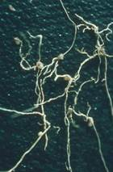

| Home |
| WHEAT |
| 1. Wheat Aphid |
| 2. Climbing cutworm / armyworm |
| 3. Ghujhia Weevil |
| 4. gram pod borer |
| 5. termites |
| 6. molya nematode / cyst nematode |
| 7. wheat-gall nematode |
| 8. Aphid |
| 9. hopper |
| 10. jassids |
| 11. wheat bug |
| 12. wheat thrips |
| 13. cut worms |
| 14. pink borer |
| 15. shootfly |
| 16. whorl maggot |
| 17. flea beetle |
| questions |
| Download Notes |
PESTS OF WHEAT :: Major Pests :: Molya Nematode / Cyst Nematode
6. Molya Nematode / Cyst nematode: Heterodera avenae (Heteroderidae: Tylenchida)
Distribution and status: Widely distributed in Europe and Australia and has recently been recorded in Rajasthan, Haryana and the Punjab. |
 |
Bionomics: This nematode passes unfavourable season in the form of cysts, mostly in the soil. A cyst consists of the dead body of a female containing a large number of eggs. When the conditions are favourable, eggs hatch within the cysts and the larvae are set free into the soil in the second stage of growth. The larvae may invade any underground part of a susceptible plant but most of them enter it at or near the root tips. After moving a short distance through the cortex, they assume a position, more or less parallel to the main axis of the root, with the head away from the tip.
The male increases in girth, until the width is equal to about 1/5th of its length and during this period it undergoes the second and third moultings. The body begins to elongate and becomes folded or coiled within the cuticle during the third stage. After assuming the final cylindrical shape, it moults for the fourth time and becomes an adult. The female does not undergo such metamorphosis, but after the second and third moultings it continues to increase in girth until it becomes ovate. It then undergoes the fourth or final moulting and emerges as a full grown adult. After mating, the eggs mature inside the body of the female and it dies, the body being converted into a cyst.
Management
- Follow crop rotation with non host crops mustard, pulses, fenugreek or carrot for one or two years
- Grow cyst nematode resistant wheat Raj MR-1 or barley RD 2035 or RD 2052
- Plough two to three times during summer
- Apply carbofuran @ 45 kg/ha